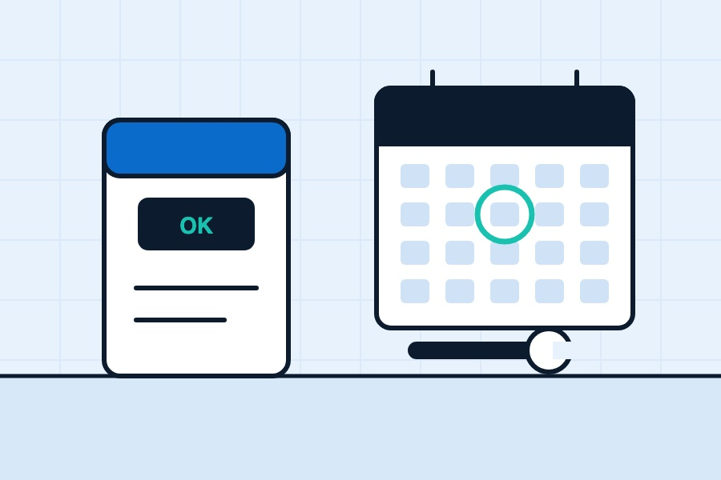

Softeners are easy to forget about. They sit in a cupboard or the garage, quietly working through power cuts, cold snaps and busy weeks, and one day you realise you can't remember the last time anyone looked at yours. So, how often should a water softener be serviced?
The short answer for most homes is once a year. Here's the slightly longer answer, and why it's worth doing.
Why a softener needs servicing at all
A softener is simple in principle. Water flows through a tank of resin beads that swap the hardness minerals for sodium, and every so often the softener rinses the beads with brine to recharge them. But to do that, it relies on a control valve, seals, a small injector that draws the brine through, screens, a drain line and the resin itself. In a hard-water area like London, all of that is doing a lot of work every single day.
Most of the time nothing dramatic goes wrong. Things just drift. A little sludge builds up in the brine tank, the injector gets partly blocked, a seal starts to wear, the settings no longer match how your household uses water. The softener keeps running, but it softens less well, wastes salt or water, or both. A service catches that drift before it turns into hard water and a call-out.
What happens at a service
Every model's a bit different, but a typical annual service from us includes:
- testing the water going in and coming out, so we know it's actually softening
- checking and adjusting the hardness setting, clock and regeneration settings
- cleaning out the brine tank and removing any salt bridges or sludge
- cleaning the injector and screens
- sanitising the resin
- checking valves, seals, the bypass and the drain for wear or leaks
- running a full manual regeneration to make sure every stage works
There's more detail on our water softener servicing page, including the drinking water systems we can look at on the same visit.
When once a year might not be enough
A yearly service is a sensible default, but think about going a bit more often if:
- Your household is big or uses a lot of water, so the softener regenerates more often.
- The softener's getting on a bit and you've had small problems before.
- It lives somewhere awkward, like a damp garage or a cupboard that gets warm, where salt bridges and grime are more likely.
- You've had a problem fixed and want to make sure it's stayed fixed.
If you're unsure, ask the engineer at your next visit. They'll have seen inside the brine tank and can tell you honestly whether a year's about right.
What you can do between services
Most of the day-to-day care is simple, and you don't need any tools:
- Check the salt monthly. Top up with the right type for your unit. Our guide to block salt, tablets and granular explains which is which.
- Watch the salt level actually go down. If it hasn't moved in weeks, something's up. A salt bridge is the usual suspect.
- Glance at the display on electric units, especially after a power cut, and reset the clock if it's flashing.
- Keep an eye on the taps and kettle. Limescale creeping back on the softened taps is the clearest sign it's not softening properly.
- Try a test strip now and then. Run a softened tap for a bit and dip a hardness strip. Softened water should read at or near zero.
Signs it needs looking at now
Don't wait for the annual visit if you notice any of these:
- limescale returning on taps, shower screens or in the kettle
- the salt not going down, or going down much faster than usual
- standing water high up in the brine tank
- water leaking from the unit, connections or bypass
- a drop in water pressure after the softener
- error codes, a blank display or constant regenerating
Before you book, run through our water softener troubleshooting checklist. Some of these are quick fixes you can do yourself. For a leak, put the softener into bypass (your manual or the sticker on the valve will show how) and give us a ring.
What if it's never been serviced?
It happens a lot, especially when a softener came with the house. Imagine a typical situation: someone moves in, the previous owner leaves a half-empty bag of salt and no paperwork, and the softener's been quietly running on old settings for years. It might be fine. It might be barely softening at all.
A first service is a good way to find out where you stand. We'll test the water, set it up for your household and let you know honestly if anything needs replacing. If you're in that boat, our guide to buying a house with a water softener has more on what to check.
Warranties and paperwork
Some manufacturers' warranties have conditions about regular servicing, so if yours is fairly new, check the small print. Either way, keep a note of when it was last serviced and what was done. It's useful for you, and handy if you ever sell the house.
Don't have a softener yet? Our installation page covers how we choose, size and fit one.
Quick answers
How often should a water softener be serviced?
Once a year suits most homes. Larger households, older units or softeners in awkward spots like damp garages may benefit from more frequent checks.
What happens if I never service my softener?
It may keep running but gradually soften less well, use more salt or water, and develop faults like blocked injectors or worn seals. Eventually limescale comes back.
Can I service a water softener myself?
You can do the day-to-day care: topping up salt, checking it's using salt, clearing salt bridges and resetting the clock after a power cut. Cleaning injectors, sanitising resin and checking valves is best left to an engineer.
Want a hand with your water?
Book a free survey and water test. We'll tell you straight whether a softener's worth it for your home.
Get a free quote